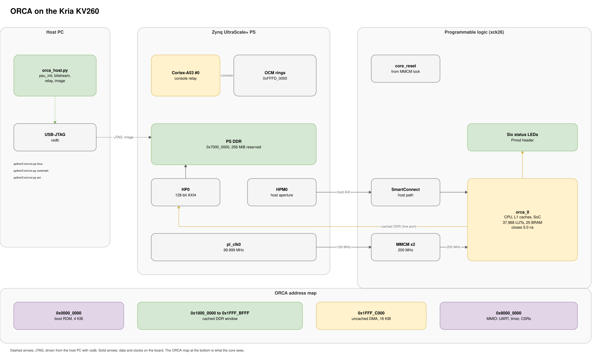

FPGA Bring-Up¶


ORCA is implemented on the Kria KV260 at 200 MHz. The core and SoC sit in the programmable logic (PL), and the processing system’s (PS) DDR serves as ORCA’s only memory. A single USB cable carries configuration, program loading and the console, so no SD card or operating system is needed on the board.
1. PL Block Design¶
The PL design is a small Vivado block design built around orca_pl_top, which is the full SoC. Five blocks surround it:
Block |
Role |
|---|---|
PS 32-bit master port (HPM0) |
host aperture: 128 KiB at |
PS 128-bit slave port (HP0) |
ORCA’s DDR path; ORCA |
SmartConnect |
joins the PS master port to ORCA’s host port |
MMCM |
generates the 200 MHz core clock from the PS’s 100 MHz |
processor reset block |
holds ORCA in reset until the MMCM locks |
A single clock drives ORCA, both PS ports and the SmartConnect, so no clock domain crossings exist in the PL. The only package pins used are six status LEDs on the Pmod header.
Design Decision: MMCM vs PS Clock¶
The PS PLLs can only produce 175, 177.8 and 200 MHz in the range of interest, and any other value would require retuning PLLs shared with the PS peripherals or DDR. An MMCM in the PL was chosen instead. It produces nearly any frequency from the PS’s 100 MHz and can be retuned on an already routed design without another place and route, which made it practical to test different clock targets.
2. Implementation Settings¶
Timing closure at 200 MHz depended on both the RTL and the implementation settings. The RTL alone reached 175 MHz, and RTL changes for timing brought the design to about 190 MHz. The remaining step to 200 MHz came from placement: with the RTL frozen, more than twenty placement draws of roughly an hour each were run across directive combinations, and the first to meet every constraint is the recipe below. Each setting is listed with the measurement that justified it, on the netlist of that point in the project (worst setup slack at 200 MHz).
Setting |
Effect on closure |
|---|---|
Core clock from an MMCM fed by the PS’s 100 MHz |
Together with a synthesis clock constraint, a flattened core and two rare-event register cuts, this round moved 200 MHz from -0.746 to -0.149 ns. |
MMCM VCO at 1600 MHz (1600 / 8) |
Clock uncertainty fell from 0.062 to 0.053 ns against the wizard’s 1200 / 6; slack moved from -0.149 to -0.140 ns on the same routing. |
Core synthesized alone with full flattening |
The largest single gain in a one-change-at-a-time directive sweep: -0.512 ns against -0.723 ns with hierarchy kept. |
Global retiming on core synthesis |
No measurable change (-0.613 ns with and without), since retiming found nothing to move. It remains in the shipped recipe. |
|
Present in every run that closed 200 MHz. |
|
On the same netlist: -0.196 ns placed, against -0.560 ns for |
Setup over-constraint during placement (0.2 ns, 0.155 ns in the final build), removed before routing |
The placer targets a tighter clock than the router needs. The final placement measured -0.053 ns with the over-constraint applied. |
Core clock buffer rooted in clock region X2Y1 |
Used in the final closure. A pblock floorplan with the root at X1Y1 was tried twice and gave worse slack. |
|
Routed result of -0.084 ns on the first closing netlist. |
Post-route closing loop: |
Took -0.084 ns to 0.000 ns. The final build ends at WNS 0.000 ns, WHS 0.009 ns. |
The same tool version and thread count reproduce the same placement, while each route writes a different bitstream. Vivado runs on the Windows side, so a staging script copies the RTL, constraints and boot ROM image there, replacing only files it owns and recording a checksum per file. fpga/kv260/project/build_200mhz.tcl applies the settings above to the project.
Design Decision: Placement Search vs Further RTL Changes¶
Past 190 MHz, every failing path was a single-cycle loop (wakeup and select, forwarding, rename, queue compares, fetch steering), and routing made up 62 to 75% of each path’s delay. These loops could not be pipelined without costing IPC, and settings that helped one netlist did nothing for the next. The decision was to put IPC first, freeze the RTL, and close the last step through placement alone.
3. Loading the Design¶
The board is configured from the host over JTAG with xsdb, the Vivado debugger, through the script kv260_jtag.tcl:
The PS boot mode register is set to JTAG boot and a system reset is issued, so the PS boot ROM waits for the debugger instead of starting the flash firmware.
The PL is configured with the bitstream.
Vivado’s generated
psu_initruns. It starts the PS clocks includingpl_clk0, brings up the DDR controller, removes the PS to PL isolation and releases the PL reset.The console relay is loaded onto Arm core 0, and the script waits for its ready word.
After setup, the script accepts one command per line on standard input (read a word, write a word, load a file into memory, read or write the console rings, reload the bitstream) and answers each with one line. orca_host.py drives this interface and holds ORCA’s register map and launch protocol. Reloading the bitstream resets ORCA, its caches and the DDR bridge while the PS and DDR stay configured, which gives every run a clean PL state.
4. Firmware¶
Two small programs run on the board without an operating system.
Console relay (Arm core 0, bare metal). ORCA’s UART is connected on chip to a second, host-facing UART, with TX and RX crossed like a null modem cable. Polling that UART one register at a time over JTAG is limited to a few hundred characters per second, which is far too slow for a Linux boot. The relay polls the UART locally and copies each received byte into a 64 KiB ring in PS on-chip memory at 0xfffe_0000, and the host reads all new bytes in one bulk transfer. Keystrokes travel the other way through a 256-byte transmit ring at 0xfffd_0100. The relay waits for a go flag before its first UART access, because the host programs the baud rate first and an Arm read during baud setup never completes. The console runs at 115200 baud.
Boot stub (ORCA boot ROM). The boot stub spins on the run ID register. When the host writes a new ID, the stub loads the entry address and argument, executes FENCE.I, and calls the program. On return, it writes the return value and the run ID to the last two words of the DMA region, which the host polls.
From the host side, a launch is done in order: ORCA is stopped and the host waits for the stopped status, the completion words are cleared, the entry, argument and a new run ID are written and read back, and the run bit is set.
Design Decision: Arm Relay vs UART Pin¶
A console on Pmod pins would need dedicated TX and RX pins and a serial connection to the host. Since the host already reaches the PL over JTAG, the console was routed through a second UART inside the SoC and relayed by the otherwise idle Arm core. No UART pins are used, and the Pmod header carries the status LEDs.
5. Loading Larger Programs¶
Small payloads of up to about 8 KiB are written through the host aperture into the DMA region at 0x1fff_c100. Larger images bypass ORCA completely: the debug port writes them directly into PS DDR at 0x7000_0000, which ORCA sees as 0x1000_0000.
Program |
Load |
Start |
Result |
|---|---|---|---|
Architecture tests |
each test’s flat image into DDR over the debug port |
entry |
pass or fail word in the mailbox (last DMA word), with cycle and instruction counts just below it |
Embench-IoT |
each program’s image into DDR |
entry |
return code, cycles and instructions of the timed call at DMA offset |
CoreMark |
image into DDR |
entry |
console output, including the cycle and instruction counters |
Random programs |
image into DDR, with the signature area prefilled with a marker |
entry |
signature in the DMA region, compared with Sail |
Linux |
kernel at DDR offset 0, device tree at |
the shim, with the device tree address as its argument (Linux) |
console |
By default, every architecture test and benchmark program starts from a fresh bitstream. The --quick option loads the bitstream once and restarts ORCA between programs, which runs the 67 architecture tests in about 30 seconds. The commands are listed in building.